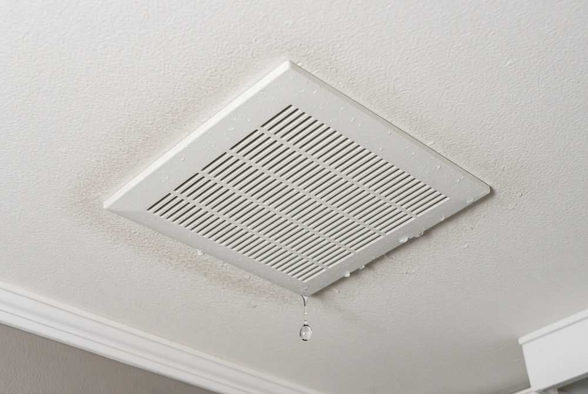
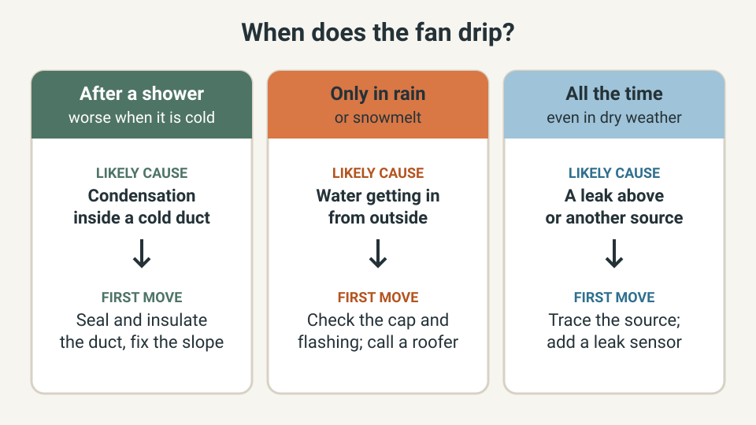
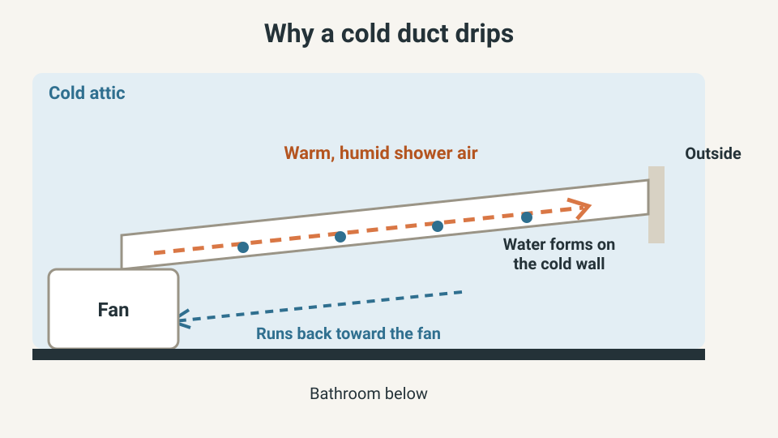
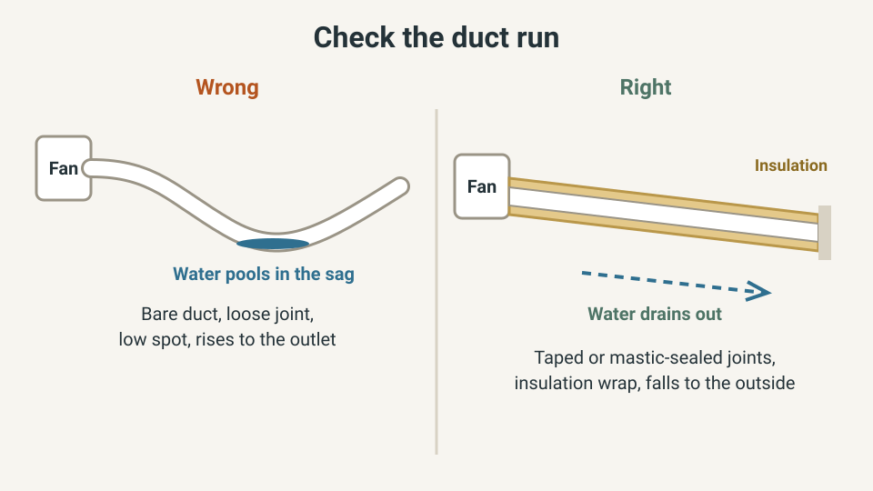

WEEKEND PROJECTS · BATHROOM VENTILATION
Water Dripping From a Bathroom Exhaust Fan? Causes and Fixes

Water is dripping from your bathroom exhaust fan, which should move moisture out, not drop it on you. Usually it is condensation: warm shower air cools inside a cold duct, turns to water and runs back to the fan. Sometimes it is rain or snowmelt getting in from outside, and that needs a different fix.
This guide helps you tell them apart in ten minutes, then fixes the usual causes, cheapest first. Switch the fan off at the breaker before you open anything.
The quick answer
- Drips after showers, mostly in cold weather: condensation in a cold duct. Seal the joints, insulate the duct and make sure it falls toward the outside.
- Drips only in rain or snowmelt, even when nobody has showered: water is getting in from outside, through the vent cap, the flashing or the roof. That is a job for a roofer.
- Drips in dry weather, or all the time: look for another source above the ceiling, such as a pipe or an air-conditioning duct, and put a leak sensor under the spot while you trace it.
- Water running into the fan motor or a light fitting: switch that circuit off at the breaker and leave the fan off until the cause is fixed.
- Painting over the damp ring comes last, after the moisture source is under control.
I am not a roofer or an electrician. This guide is built from the U.S. Department of Energy’s Building America Solution Center and from building-advice publications, and where a source says something is usually true, I say usually. Follow your fan’s manual and local rules, and ask a licensed professional when in doubt.
Quick plan
| Item | Detail |
|---|---|
| Time | About 10 minutes to work out when it drips; 30 to 90 minutes in the attic for duct fixes, depending on the length of the run |
| Cost | Usually low for tape, mastic, clamps and duct insulation (check current prices); a roofer’s quote if the cap or flashing is at fault |
| Best for | Homes where the bathroom fan is ducted through an attic or roof space and drips water into the room |
| Goal | A dry ceiling, a duct that drains outdoors, and a clear answer on whether this is a duct job or a roof job |
Step 1: Work out when it drips (10 minutes)
The pattern points to the cause before you touch a tool. For a few days, note the time, whether anyone showered in the last half hour, and the weather. Building Advisor’s guide to ceiling stains suggests the same detective work: does it show up after showering, after a rain storm, only in winter or only in summer?

What the pattern usually means:
- Winter, after showers: Building Advisor says to consider condensation inside the bath fan duct.
- Summer only: the same source points to condensation on air-conditioning ducts rather than the fan duct.
- Only after rain: flashing around a roof penetration is a common source of ceiling leaks, and a Green Building Advisor answer says rain entering through a vent would happen only while it is raining.
- Far from the vent: water can run sideways along pipes or framing before it drips, so the entry point may be some distance from the stain.
Why a cold duct makes the fan drip
Shower air is warm and full of water vapor. Where the duct crosses an unheated attic, the duct wall gets cold and the vapor turns back into liquid on it. InterNACHI’s inspection guidance notes that uninsulated bathroom exhaust ducts in an unconditioned attic can form condensation in some climates and conditions, and that a fan which exhausts into the attic instead of outdoors lets warm, moist air condense on cold framing and insulation.

Where that water goes depends on the slope. Building Advisor says a low point in the run, especially in flexible duct, lets condensed water collect and then drip into the room. The Building America Solution Center advises, where possible, ending the duct on a side wall slightly below the fan so the run falls away from the housing and carries condensation outdoors, and insulating the duct to minimize condensation.
That is why one fix rarely works alone. A bare, sagging duct that climbs toward the outlet has three problems at once.
Step 2: Check the duct run from the attic (30 to 60 minutes)
Do this on a dry day when the attic is not hot. Switch the fan’s circuit off at the breaker first. Step only on the joists or a board laid across them, because drywall will not hold your weight. Wear gloves and a dust mask. If the insulation is a loose, pebble-like material in gray-brown or silver-gold, stop: the EPA says to assume vermiculite insulation contains asbestos and not to disturb it.
- Where does it end? The duct must reach the outdoors, not stop in the attic or a soffit. The Building America Solution Center says to vent outdoors, not into an attic, crawlspace or space between floors.
- Is every joint still joined? Look for pulled-apart sections and gaps. The guide calls for mechanical fasteners or a clamp, sealed with mastic or UL-approved metal tape.
- Is the duct bare? A bare duct in a cold attic is the classic cause. The guide says to insulate it and to cover the fan housing and duct with attic insulation.
- Does it sag or climb? Look for a low pocket or a run that rises toward the outlet. Flexible duct should be stretched tight, and smooth rigid duct is preferred.
- Is it kinked or crushed? A squashed section cuts airflow and gives water a place to sit.

Building Advisor suggests a fall of about a quarter inch per foot toward the outdoors for a duct that has to drain outside, with a short, smooth, leakproof run. That is one site’s rule of thumb, so check your fan maker’s manual and local rules before you re-hang anything.
Step 3: Fix the usual causes, cheapest first
Change one thing at a time and watch two or three showers, so you learn what worked. The order below is my suggestion, from least work to most.
| Cause | How you spot it | Fix |
|---|---|---|
| Pulled-apart or leaking joints | Gaps, damp insulation or stains near a joint | Reconnect with a clamp or fasteners, then seal with mastic or UL-approved metal tape |
| Bare duct in a cold attic | No insulation on the duct, drips mostly in cold weather | Insulate the duct, following the product instructions; the Building America guide also covers the fan housing and duct with attic insulation |
| Sag or slope back to the fan | A low pocket, or a run that climbs toward the outlet | Support the run so it is straight and falls toward the outside; stretch flexible duct tight or swap it for smooth rigid duct, which the Building America cold-weather guide also prefers |
| Stuck damper or blocked cap | The flap does not move freely or does not close; debris in the cap | Free or replace the damper or cap. The wall cap should have a damper that closes when the fan is off, with a screen to keep out pests |
| Fan exhausting into the attic | The duct ends in the attic, or there is no duct | Run a duct to the outdoors; this can be a pro job |
| Fan runs too briefly | Mirror fogs and the ceiling stays damp even with a sound duct | Fit a timer switch; guidance on run time varies, so see our condensation guide |
When it is not condensation: rain, flashing and the roof
If the drip starts when rain or melting snow arrives, even when nobody has showered, suspect water getting in from outside. From the ground, check that the wall cap is in place, its flap moves and nothing blocks it. The Building America Solution Center says the outdoor end should have a hooded cap with a damper and screening. Do not climb onto a wet or steep roof. If the cap, flashing or shingles around a roof vent look damaged, ask a roofer to look.
While you wait, switch the fan off at the breaker and put a container under the drip. If it drips in dry weather with no shower, the water may be coming from a pipe or an air-conditioning duct in the space above rather than from the fan. Put a leak sensor under the spot; our guide to where to put water leak sensors shows how.
Safety and when to call a professional
- Electricity: switch the fan circuit off at the breaker before opening the housing. Do not use a fan that has had water running into its motor or wiring until the cause is fixed and it is dry. If the fan sits over a tub or shower, check its label says it is approved for that spot.
- The attic: heat, joists, nails and insulation dust are real hazards. Do not work alone in a hot attic.
- The roof: call a roofer for the cap, flashing or shingles. Do not climb a wet roof.
- An electrician: call one if the breaker trips, you smell burning, or water has reached wiring or a light fitting.
- Mold or a soft ceiling: call a professional if mold covers a large area, the ceiling sags, or the stain keeps growing after you fix the duct. Our bathroom condensation guide covers mold and damp.
US, UK and EU notes
In the UK and much of Europe the same fan is usually called an extractor fan, and a duct through a loft faces the same condensation problem. Duct materials, insulation rules and fan requirements differ by country, so follow your local rules or your fan’s manual where they are stricter than this guide. On run time, the Building America Solution Center recommends a timer switch and suggests leaving the fan on for an hour after a shower; our condensation guide cites shorter figures from HVI and England’s Approved Document F.
Quick win (10 minutes)
- Switch the fan on and hold a single tissue to the grille. The Building America guide shows a fan that cannot hold a tissue as a sign of weak suction.
- Ask someone to run the fan while you watch the outside wall cap. The flap should open when the fan runs and close when it stops. If the vent is on the roof, look from the ground.
- Draw a pencil outline around the damp ring on the ceiling and write the date. After the next few showers, check whether the ring has grown. That tells you whether you are winning.
- Write down when the next drip happens: shower, rain or neither. That single note usually decides which section of this guide you need.
What not to buy yet
- Stain-blocking primer or fresh paint on the ring. Our paint finish guide is for after the moisture source is under control.
- A replacement fan, before the duct is checked. If the duct is fine and the fan is weak, see our guide to choosing a bathroom exhaust fan.
- Caulk or tape around the grille to hide the drip.
- Roof repairs you cannot reach safely. Hire them out.
Common mistakes
- Fixing the symptom: wiping the grille or painting the ring.
- Insulating a duct that still slopes back toward the fan.
- Taping joints with ordinary tape. The Building America guide specifies mastic or UL-approved metal tape.
- Venting the fan into the attic.
- Switching the fan off the moment you leave, so moisture stays in the room and the duct.
- Climbing onto a wet roof to look.
Frequently asked questions
Is water dripping from a bathroom fan dangerous?
Water and electricity should not mix. If water is running into the fan motor or a light fitting, switch that circuit off at the breaker and leave the fan off until the cause is fixed and everything is dry. A ceiling that stays wet can also stain, soften and grow mold, so do not leave it for months.
Why does my bathroom fan only drip in winter?
Cold weather chills the duct, so shower air condenses inside it. A building-advice site that helps readers diagnose ceiling stains says that if the problem appears only in winter, condensation inside the bath fan duct is a suspect, while summer-only drips point toward air-conditioning ducts instead.
Will insulating the duct stop the dripping?
It often helps, because the Building America Solution Center advises insulating the duct to minimize condensation. It is not a guarantee on its own. If the duct sags, rises toward the outlet or has leaking joints, water can still collect, so fix those as well.
Should the duct slope up or down?
Down and away from the fan, toward the outside. The Building America Solution Center says the duct should slope away from the housing where possible so condensation drains outdoors. One building-advice site suggests about a quarter inch of fall per foot, so check your fan manual and local rules before you re-hang a run.
Can I just replace the fan?
Only after you have checked the duct. A new fan connected to the same cold, sagging duct will drip too. If the duct is sound and the fan is weak or noisy, see our guide to choosing a bathroom exhaust fan.
Keep going
- Choose a bathroom exhaust fan that works
- Reduce bathroom condensation
- Where to put water leak sensors
- Choose a paint finish for each room
Sources and further reading
- Building America Solution Center: Bathroom exhaust fans
- Building America Solution Center: Managing indoor humidity and ventilation in cold weather
- Building Advisor: What caused water stains on ceiling?
- Green Building Advisor: What causes a bathroom vent fan to drip water?
- InterNACHI: Bathroom exhaust fans and ducts
- InterNACHI: Uninsulated exhaust duct in an attic and condensation
- EPA: My attic has vermiculite insulation